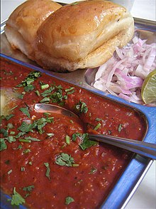

home
Indian Recipes: Pav Bhaji

Description
Pav Bhaji is a fast food dish from India consisting of a
thick vegetable curry (bhaji) served with a soft bread roll
(pav).
Overall, its a very simple and delicious recipe to make.
Ingredients
- 1/2 cup vegetable oil
- 2 teaspoons chopped garlic
- 1 teaspoon finely chopped green chile peppers
- 1 cup chopped onions
- 2 teaspoons grated fresh ginger
- 1 cup chopped plum tomatoes
- 1 cup sliced cabbage
- 1 cup green peas
- 1 cup green peas
- 1 cup grated carrots
- 4 potatoes, boiled and mashed
- 3 tablespoons pav bhaji masala
- salt to taste
- 1 tablespoon lemon juice
- 8 dinner rolls
- 1/2 tablespoon butter
- 1/3 cup finely chopped onion
- 1 tablespoon finely chopped green chile peppers
- 1/4 cup chopped fresh cilantro
- Pav bhaji masala (found in Asian Indian stores)
Recipe
- Heat the oil in a wok over medium heat.
-
Saute the garlic and green chile for 30 seconds, then stir in the onion
and ginger.
-
Cook the onions until they turn brown. Add the tomatoes and cook until
it becomes a paste.
-
Stir in cauliflower, cabbage, peas, carrots and potatoes. Season with
pav bhaji masala.
-
Cover and cook for 15 minutes, stirring occasionally. Season with salt
and mix with lemon juice.
-
Fry the dinner rolls and spread them lightly with butter. Garnish with
chopped onion, green chile and coriander.
...and your pav bhaji is ready to serve